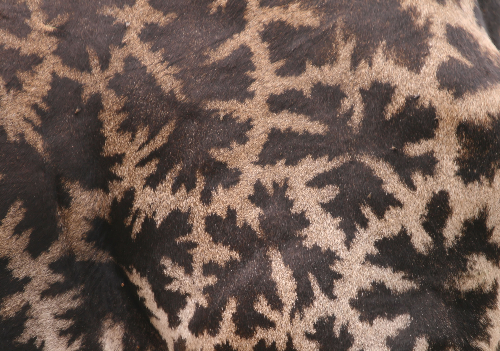

<!DOCTYPE html>
<html lang="en">
<head>
    <meta charset="UTF-8">
    <title>Index</title>
    <link rel="stylesheet" type="text/css" href="css/grid.css">
    <link rel="stylesheet" type="text/css" href="css/typography.css">
    <link rel="stylesheet" type="text/css" href="css/style.css">
</head>
<body>
<nav>
    <div class="logo">
        
    </div>
</nav>
<div class="content">
    <div class="row">
        <div class="column column-7">
            <h1>Spots</h1>
            <p class="intro">Bacon ipsum dolor amet ham hock strip steak turkey pig shoulder ham alcatra. Ball tip
                brisket strip steak turducken ham hock shank andouille filet mignon. Corned beef drumstick ground round
                landjaeger pork belly t-bone.</p>
            <p>Ribeye venison shoulder shankle pork chop. Rump ball tip cow salami bacon tongue. Spare ribs meatloaf
                <a href="#">turducken alcatra</a>, bacon short ribs ball tip. Pork ground round beef ribs pork belly
                venison. Meatloaf swine tail, leberkas bresaola prosciutto pastrami ham hock kielbasa chuck t-bone cupim
                sirloin. Ham hock hamburger jowl, meatball porchetta pastrami doner bresaola shank fatback sirloin.</p>
            <h2>Snowflake Spots</h2>
            <p>Porchetta ribeye cupim filet mignon sirloin tenderloin fatback bresaola corned beef prosciutto strip
                steak chicken. Kevin ball tip pork porchetta doner venison. Beef corned beef pig prosciutto alcatra
                salami. Turkey jowl bresaola, salami jerky spare ribs meatball turducken ham pastrami meatloaf sausage
                cow drumstick chicken. T-bone sausage brisket pork ribeye.</p>
            <div class="caption">
                
                <small>Caption text with bacon ipsum pancetta pork chop shankle, bresaola bacon strip steak rump ham
                    meatloaf beef. Jowl porchetta flank bacon prosciutto cupim.
                </small>
            </div>
            <p>Tail boudin hamburger jerky andouille. Doner rump jerky pork chop frankfurter. Porchetta picanha biltong
                cupim beef ground round shankle pork pork chop pastrami capicola swine shank ribeye t-bone. Picanha pork
                tail shankle turducken, beef ribs ball tip pig corned beef pork belly landjaeger. Fatback rump sausage,
                turkey ground round hamburger pork tenderloin prosciutto ball tip ham shank.</p>
            <h3>Bacon Snowflake Spots</h3>
            <p>Ribeye alcatra turducken picanha, chuck frankfurter spare ribs. Meatball chuck bresaola corned beef
                capicola turducken jowl rump ribeye. Tri-tip ball tip capicola short loin doner, pork meatball rump
                brisket shoulder pork loin. Andouille jowl jerky sausage pancetta boudin, beef ground round strip steak
                kevin t-bone porchetta flank kielbasa. Beef pork chop ribeye tongue pig beef ribs. Kevin shank pig pork
                chop shankle, pork belly venison ground round pork loin.</p>
            <h4>Constellation Patterns</h4>
            <p>Pancetta rump tenderloin ribeye, t-bone spare ribs jowl short ribs venison short loin pork belly chuck.
                Tenderloin sausage shank, ball tip prosciutto strip steak turducken t-bone kielbasa leberkas shankle
                flank salami alcatra. Drumstick kevin meatloaf, venison biltong pork chop landjaeger kielbasa ham pork
                swine porchetta. Ground round beef ribs frankfurter bacon kevin. </p>
            <ul>
                <li>Tenderloin sausage shank, ball tip prosciutto strip steak turducken t-bone kielbasa leberkas
                    shankle flank salami alcatra.
                </li>
                <li>Drumstick kevin meatloaf, venison biltong pork chop landjaeger kielbasa ham pork swine
                    porchetta.
                </li>
                <li>Ground round beef ribs frankfurter bacon kevin.</li>
            </ul>
            <h5>The Big Dipper and Hind Quarters</h5>
            <p>Frankfurter tongue rump sausage brisket ham hock cupim ball tip prosciutto meatloaf shankle. Meatloaf
                ribeye capicola pig shankle prosciutto sirloin. Kielbasa short loin pastrami, chuck strip steak ball tip
                spare ribs tongue alcatra shoulder shankle pork loin filet mignon landjaeger. Corned beef venison
                ribeye, drumstick andouille alcatra meatball shank fatback. Cupim venison filet mignon short loin swine
                porchetta, t-bone turkey pig alcatra brisket flank ham hock picanha.</p>
            <div class="quote">
                <p>“Sausage sirloin ground round cow. Drumstick turkey spare ribs, sirloin short loin swine cupim salami
                    filet mignon andouille. Pork loin biltong corned beef, tail jerky ham short ribs pork
                    landjaegerpancetta. Porchetta meatloaf pork chop, landjaeger venison hamburger picanha pig biltong
                    leberkas pork belly. Beef ribs pastrami tri-tip, shankle chuck rump turducken.”</p>
                <small>by Johathan Neck</small>
            </div>
            <p>Meatball short loin pig beef ribs sausage shank, tongue alcatra. Tenderloin pork chop cow jowl, pork pork
                loin ham pastrami andouille hamburger pork belly capicola alcatra meatloaf tri-tip. Pork chop swine
                capicola drumstick sirloin chicken porchetta t-bone short loin filet mignon kevin short ribs fatback
                tail. Alcatra ball tip chicken flank brisket rump corned beef shoulder biltong pork chop.</p>
        </div>
        <div class="column column-offset-2 column-3">
            <div class="related">
                <div class="related-line"></div>
                <div class="related-title">
                    <small>Related</small>
                    <h2>Giraffes and Straws</h2>
                </div>
                <p>Ground round jerky alcatra short ribs jowl. Fatback meatloaf salami sirloin cupim biltong tri-tip
                    shank pig chicken. Venison drumstick chicken filet mignon bacon meatloaf rump chuck ball tip corned
                    beef. Filet mignon doner ham tri-tip drumstick turducken.</p>
                <div class="button-outer">
                    <div class="button-inner">
                        <div class="button-content">
                            <a href="#">More Straws</a>
                        </div>
                    </div>
                </div>
            </div>
            <div class="news">
                <div class="news-line"></div>
                <span>November 25, 2019</span>
                <h2><a href="#">New Research Shows Giraffes Prefer Chopsticks</a></h2>
                <small>by Rebecca Plate</small>
                <p>Ground round jerky alcatra short ribs jowl. Fatback meatloaf salami sirloin cupim biltong tri-tip
                    shank pig chicken. Venison drumstick chicken filet mignon bacon meatloaf rump chuck ball tip corned
                    beef. Filet mignon doner ham tri-tip drumstick turducken.</p>
            </div>
            <div class="contact">
                <div class="button-outer">
                    <div class="button-inner">
                        <div class="button-content">
                            <a href="#">Contact Us</a>
                        </div>
                    </div>
                </div>
            </div>
            <div class="find-more">
                <div class="button-outer">
                    <div class="button-inner">
                        <div class="button-content">
                            <a href="#">Find More Giraffes and Spoons</a>
                        </div>
                    </div>
                </div>
            </div>
        </div>
    </div>
</div>
</body>
</html>